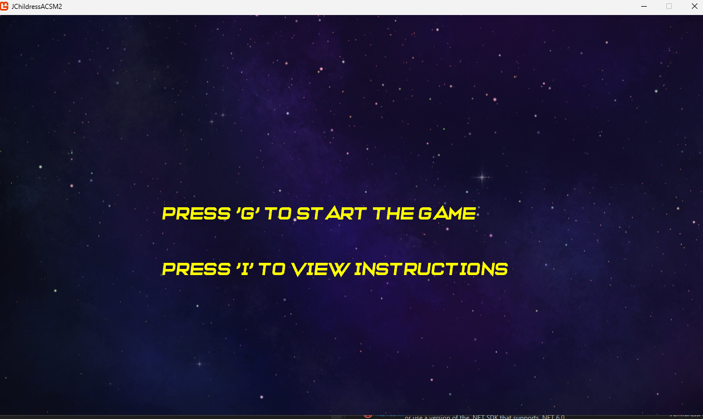
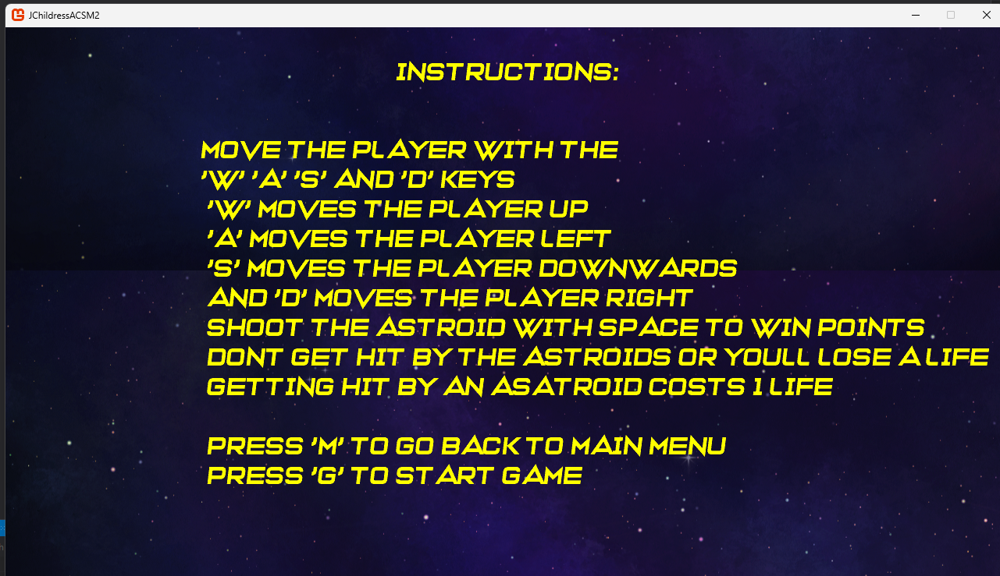
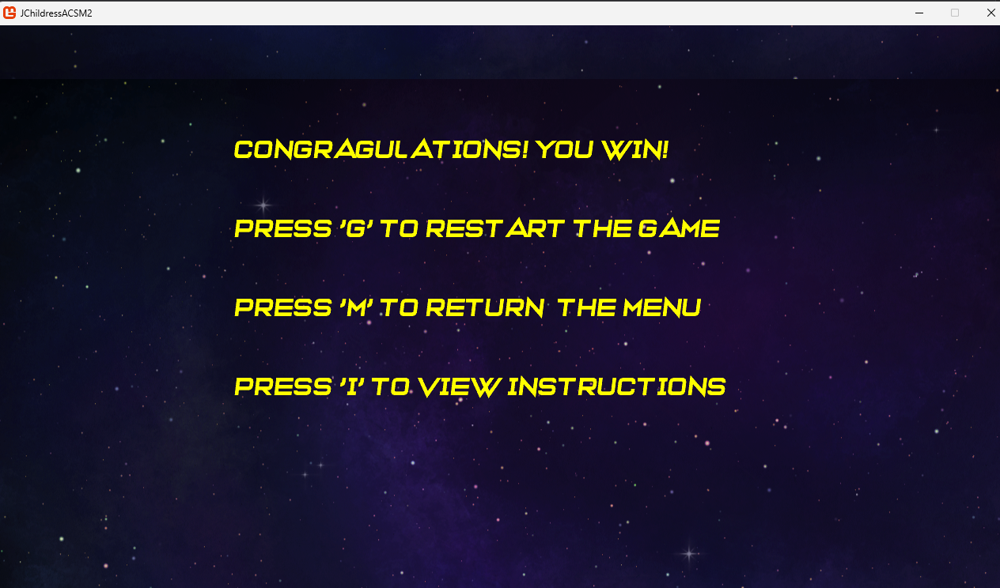
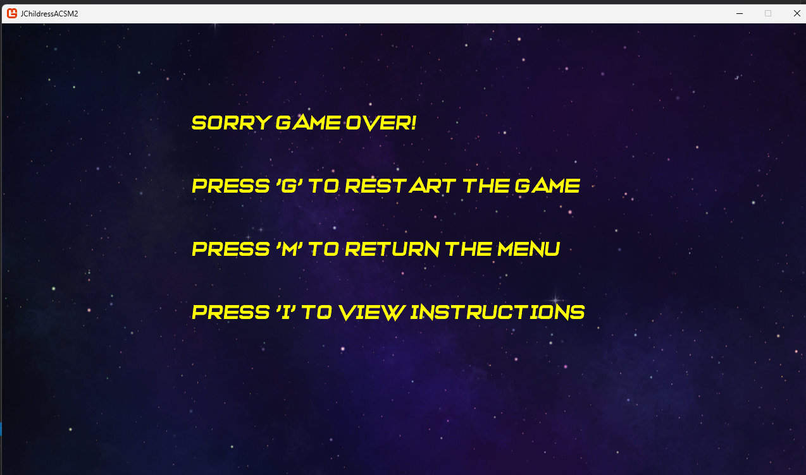

Astroids
This page is for explaining my project "Astroids Game". To begin, Lets explore the main menu of the game!
Main Menu

This is the main menu of the game. A simple interface for navigating the game. Two buttons are available: "Start Game" and "Instructions". Not much else to say about it so lets get into the instructions!
Instructions

The instructions page is where users can learn how to play the game. The instructions are simple and easy to understand, with clear explanations of the controls and objectives of the game. The instructions also include tips and strategies for playing the game, as well as information about how the controlls work and how to win the game. Overall, the instructions page is an essential part of the game as it helps users understand how to play and enjoy the game to its fullest potential.
The game

The game itself consists of 4 levels. Each level presents a number of obstacles for the player to overcome, increasing the amount of astroids each level. To start, the player has 3 lives to get through 4 levels. To get points the player must destroy astroids and avoid collisions. Astroids will spawn in random positions and move across the screen at random speeds, and if they reach the end of the screen on the opposite side they will respawn back at the top with a new position and speed. The player can shoot bullets to destroy the astroids, but must be careful not to collide with them as that will cost them a life. Once the player gets through all levels, they win the game, or lose the game once they collide with an astroid 3 times
Winning/Losing


The win and lose screens are similar in design and layout. Both show the same inscrutions, to allow the player to either restart the game ,return to menu, or return to the game inscrtuctions, but show different results.